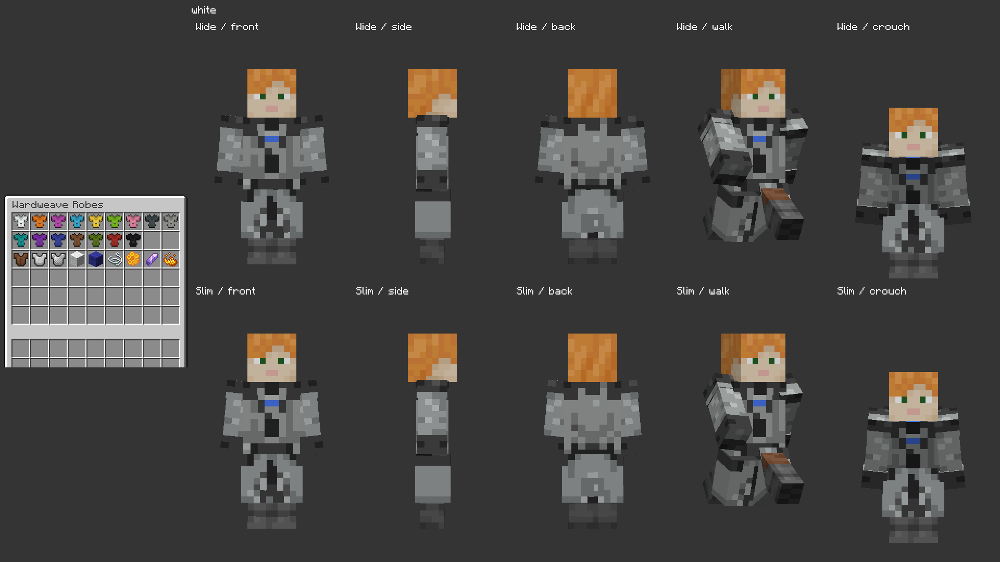
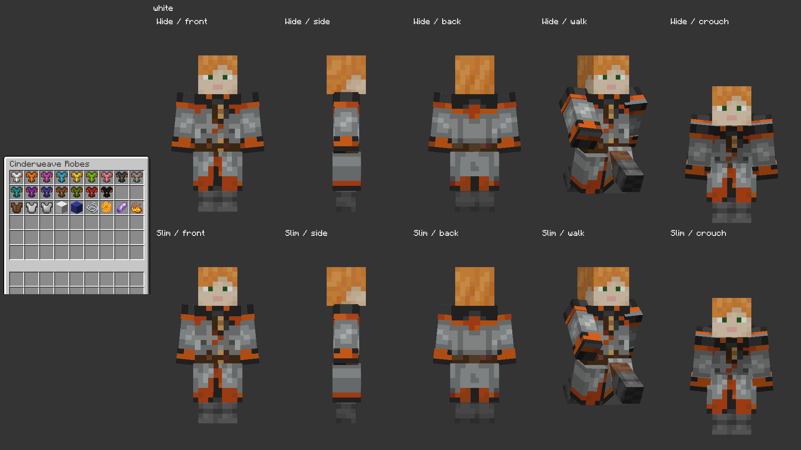
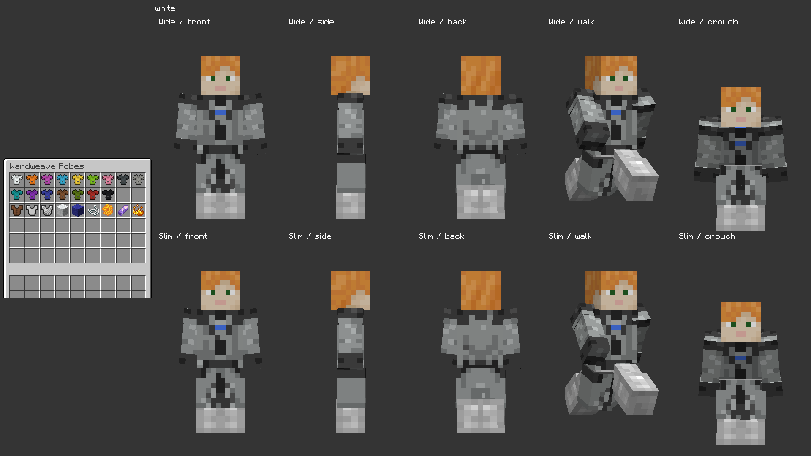
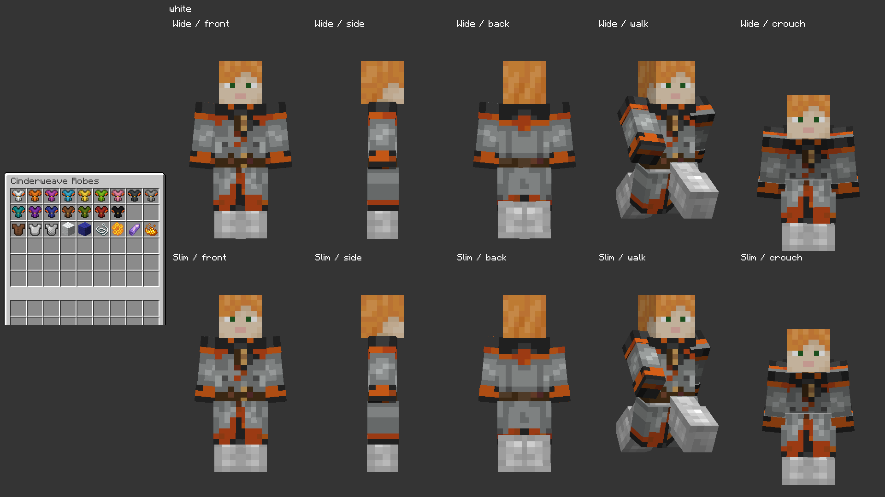

Owner-approved October 8, 2026. Actual Minecraft captures of the accepted collars, chest designs, folded cuffs and split lower robe. Each main view shows front, side, back, walking and crouching: wide player above, slim player below. Approval record.



